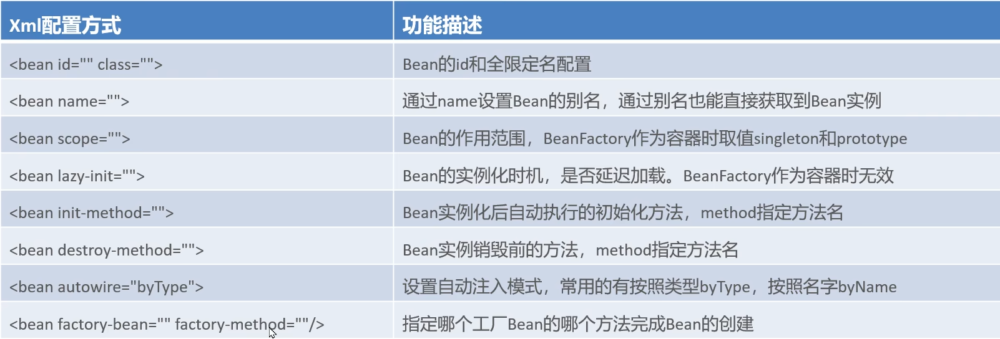
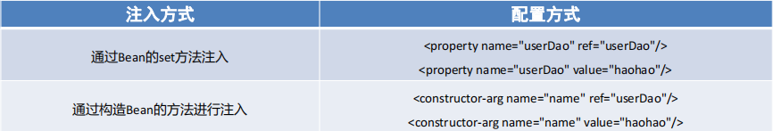
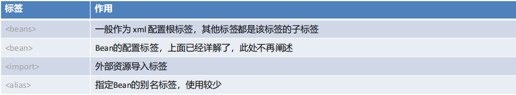

3-基于Xml方式配置的Bean配置
基于Xml方式配置的Bean配置
常见配置

id 配置
作为 getBean 的唯一标识
1 | <bean id="userDao" class="com.itheima.dao.impl.UserDaoImpl"/> |
获取 bean
在applicationContext -> BeanFactory -> Single...
1 | applicationContext.getBean("userDao"); |
如果不配置id，则Spring会把当前Bean实例的全限定名作为beanName
1 | applicationContext.getBean("com.itheima.dao.impl.UserDaoImpl"); |
name 别名配置
可以根据别名获取bean，在applicationContext -> BeanFactory -> AliasMap
如果不配 id 只配 name，那么第一个别名就是 id
1 | <bean id="userDao" name="aaa,bbb" class="com.itheima.dao.impl.UserDaoImpl"/> |
Bean的作用范围
singleton：单例，默认值。Spring 容器创建的时候就会进行 Bean 的实例化，存储到单例池中，每次 getBean 都是从单例池中获取相同的 Bean 实例prototype：原型，Spring 容器初始化不会创建 Bean 实例，调用 getBean 才会实例化，每次都是创建一个新的 Bean 实例
当前环境如果是基础 Spring 环境，那么 scope 只有两个，如果 MVC
环境，还有 request，session
Bean 的延迟加载
当Spring容器创建的时候，不会立即创建Bean实例，等待用到时在创建 Bean 实例并存储到单例池中去，后续在使用该 Bean 直接从单例池获取即可，本质上该Bean还是单例的
只对 ApplicationContext 有效，Beanfactory一直是延迟加载
1 | <bean id="userDao" class="com.itheima.dao.impl.UserDaoImpl" lazy-init="true"/> |
Bean 的初始化和销毁方法配置
Bean在被实例化后，可以执行指定的初始化方法完成一些初始化的操作，Bean在销毁之前也可以执行指定的销毁方法完成一些操作。
（先构造函数，再初始化）
（但是销毁方法可能没执行，ApplicationContext就回收了）
1 | <bean id="userDao" class="com.itheima.dao.impl.UserDaoImpl" init-method="init" |
1 | public class UserDaoImpl implements UserDao { |
同时还可以通过实现 InitializingBean 接口，完成一些 Bean 的初始化操作。
1 | public class UserDaoImpl implements UserDao, InitializingBean { |
Bean的实例化配置
Spring的实例化方式主要如下两种：
构造方式实例化：底层通过构造方法（反射拿到它）对Bean进行实例化
工厂方式实例化：底层通过调用自定义的工厂方法对Bean进行实例化
构造方法实例化配置
有参构造在实例化Bean时，需要参数的注入，通过
<constructor-arg> 标签，嵌入在
<bean> 标签内部提供构造参数
1 | //有参构造方法 |
这个 constructor-arg 标签只要是创建 Bean
需要的参数都可以用到它
1 | <bean id="userDao" class="com.itheima.dao.impl.UserDaoImpl"> |
工厂方法实例化配置
工厂方式实例化 Bean，分为三种
静态工厂方法实例化Bean
实例工厂方法实例化Bean
实现FactoryBean规范延迟实例化Bean
静态工厂实例化
静态工厂方法实例化Bean，其实就是定义一个工厂类，提供一个静态方法用于生产Bean实例，在将该工厂类及其静态方法配置给 Spring 即可
1 | //工厂类 |
注意：<constructor-arg>
标签不仅仅是为构造方法传递参数，只要是为了实例化对象而传递的参数都可以通过
<constructor-arg> 标签完成
1 | <bean id="userDao" class="com.itheima.factory.UserDaoFactoryBean" factory-method="getUserDao"> |
实例工厂方法
实例工厂方法，也就是非静态工厂方法产生 Bean 实例。与静态工厂方式比较，该方式需要先有工厂对象，在用工厂对象去调用非静态方法，所以在进行配置时，要先配置工厂 Bean，在配置目标Bean
1 | //工厂类 |
这样配置以后，单例池既有工厂 Bean 实例，也有目标 Bean 的实例
1 | <!-- 配置实例工厂Bean --> |
实现 FactoryBean 规范延迟实例化 Bean
Spring提供了FactoryBean的接口规范，FactoryBean接口定义如下：
1 | public interface FactoryBean<T> { |
定义工厂实现这个接口
1 | public class UserDaoFactoryBean3 implements FactoryBean<UserDao> { |
配置 FactoryBean 交由 Spring 管理即可，通过 Spring 容器根据 beanName 可以正常获得UserDaoImpl
1 | <bean id="userDao" class="com.itheima.factory.UserDaoFactoryBean3"/> |
1 | ApplicationContext applicationContext = |
FactoryBean 被实例化了，并存储到了单例池 singletonObjects
但是
getObject()方法尚未被执行，UserDaoImpl也没被实例化当首次用到 UserDaoImpl 时，才调用
getObject()此工厂方式产生的Bean实例不会存储到单例池 singletonObjects 中，会存储到 factoryBeanObjectCache 缓存池中，并且后期每次使用到 userDao 都从该缓存池中返回的是同一个 userDao 实例
重点：工厂 Bean 丢进了单例池，但是工厂造的 Bean 放进工厂 Bean 缓存中，延迟加载
Bean 的依赖注入的配置

依赖注入的数据类型有如下三种：
普通数据类型，例如：String、int、boolean等，通过
value属性指定引用数据类型，例如：UserDaoImpl、DataSource等，通过
ref属性指定集合数据类型，例如：List、Map、Properties等
List（Set）
注意提前写好 set 方法
1 | <property name="strList"> |
list 内部项是 bean，可以构造方法得到新的
1 | <property name="objList"> |
list 内部项是 bean，也可以通过引用
1 | <!--配置UserDao--> |
Set 和 List 类似，不赘述。
Map
1 | <!--注入值为字符串的Map集合--> |
properties 键值对
1 | <property name="properties"> |
自动装配方式
如果被注入的属性类型是Bean引用的话，那么可以在
<bean> 标签中使用 autowire
属性去配置自动注入方式，属性值有两个
byName：通过属性名自动装配，即去匹配setXxx与id="xxx"（name="xxx"）是否一致byType：通过 Bean 的类型从容器中匹配，匹配出多个相同 Bean 类型时，报错
1 | <bean id="userService" class="com.itheima.service.impl.UserServiceImpl" |
标签
标签分类
默认标签：不用额外导入其他命名空间约束的标签，例如
<bean>标签自定义标签：需要额外引入其他命名空间约束，并且通过前缀引用的标签，例如
<context:property-placeholder>
Spring的默认标签用到的是Spring的默认命名空间，配置需要配
xmlns 和 schemaLocation
1 | <beans xmlns="http://www.springframework.org/schema/beans" |
默认命名空间下的标签

beans 标签
1 | <!-- 配置测试环境下，需要加载的Bean实例 --> |
可以使用以下两种方式指定被激活的环境：
使用命令行动态参数，虚拟机参数位置加载
-Dspring.profiles.active=test使用代码的方式设置环境变量
System.setProperty("spring.profiles.active","test")
import 标签
<import>
标签，用于导入其他配置文件，项目变大后，就会导致一个配置文件内容过多，可以将一个配置文件根据业务某块进行拆分，拆分后，最终通过
<import>
标签导入到一个主配置文件中，项目加载主配置文件就连同
<import> 导入的文件一并加载了
1 | <!--导入用户模块配置文件--> |
Alias 标签
<alias> 标签是为某个 Bean 添加别名，与在
<bean> 标签上使用 name 属性添加别名的方式一样，我们为
UserServiceImpl 指定四个别名：aaa、bbb、xxx、yyy
1 | <!--配置UserService--> |
自定义标签
Spring的自定义标签需要引入外部的命名空间，并为外部的命名空间指定前缀，使用
<前缀:标签>
形式的标签，称之为自定义标签，自定义标签的解析流程也是 Spring
xml扩展点方式之一。
引入的方式如果是Spring的就复制搞多一份，如果是其他（需要先导入 maven 坐标）可以参考网上的资料
1 | <!--默认标签--> |